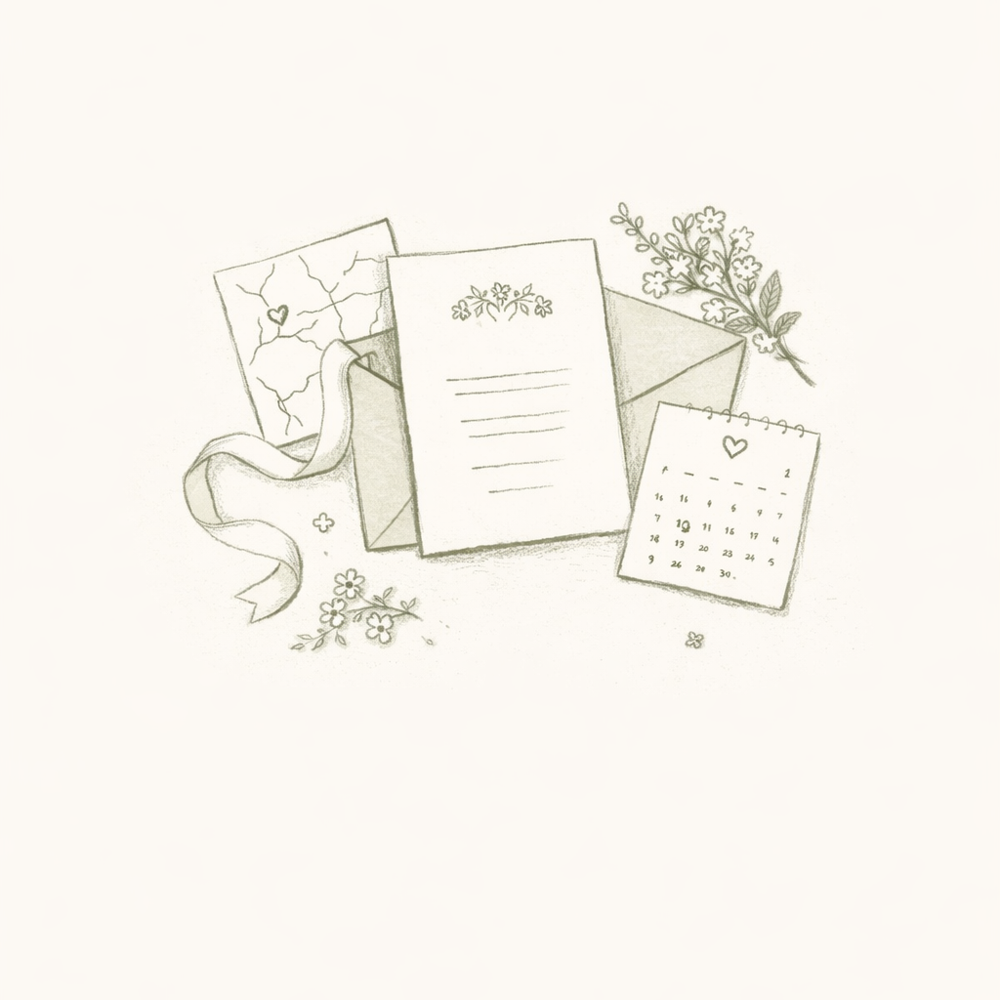

Informações úteis
Quinta da Luz, Sintra
A cerimónia e a receção decorrem no mesmo local.
O espaço dispõe de estacionamento e acesso simples.
Esta área pode ser usada para notas práticas, dress code, horários ou recomendações logísticas.